Source left, native right. Compare actual local action-to-boundary extent; one raster row can differ with fractional document origin. Neither full-page height nor pixel percentage is an equivalence gate.
All 18 canonical pairsRaw geometry/pixelsChecks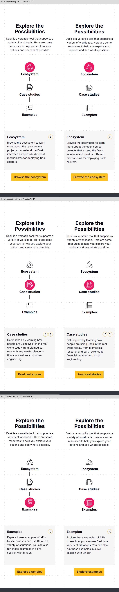
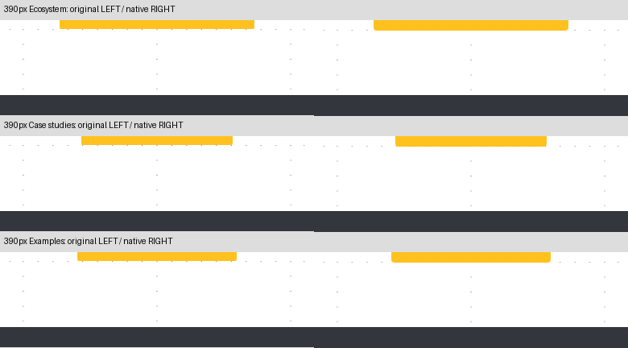
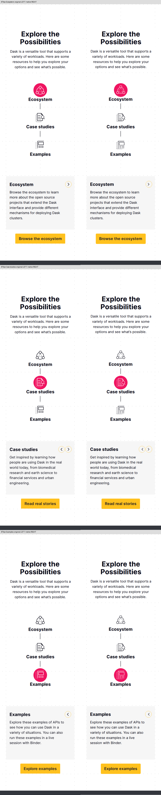
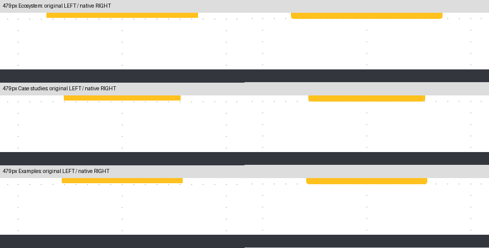
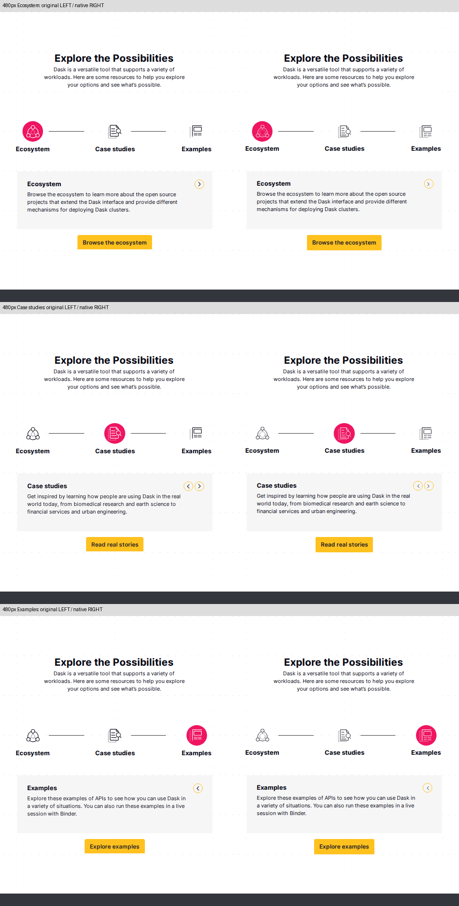
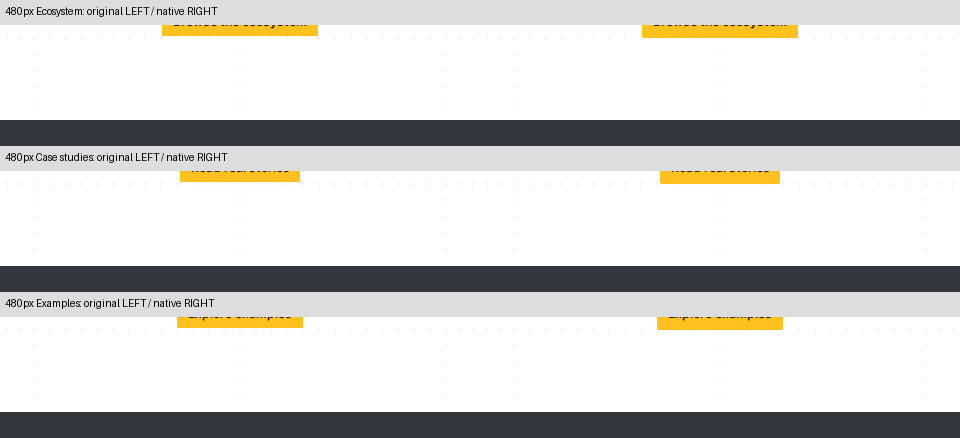
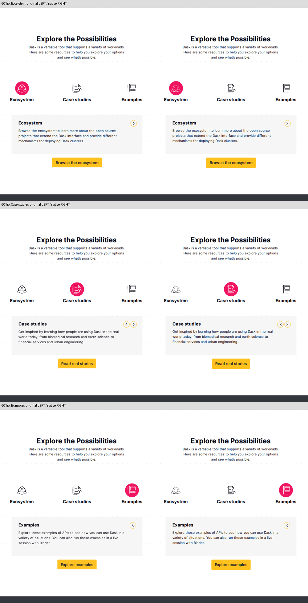
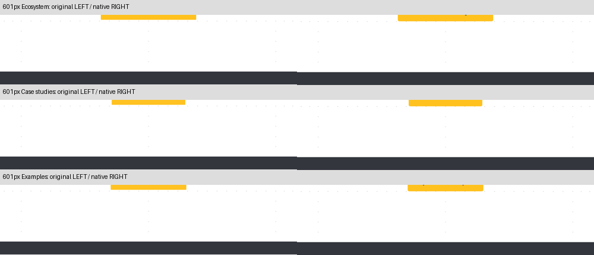
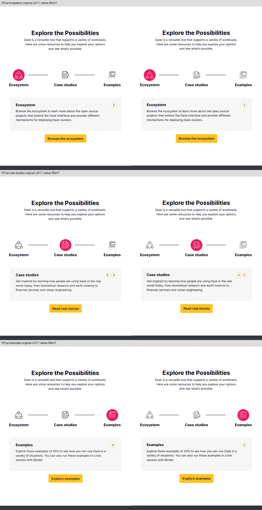
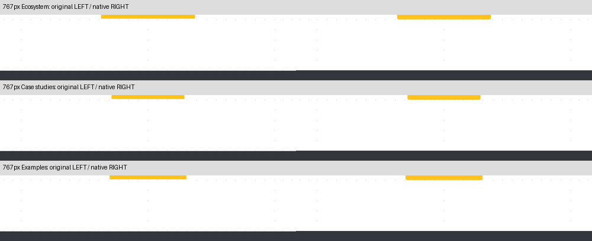
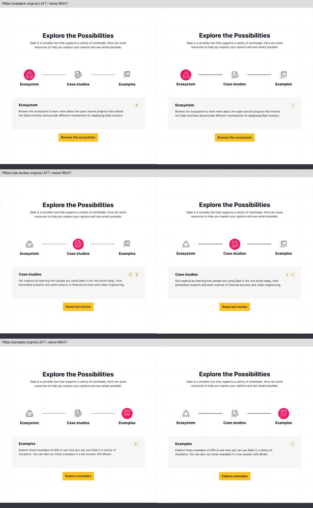
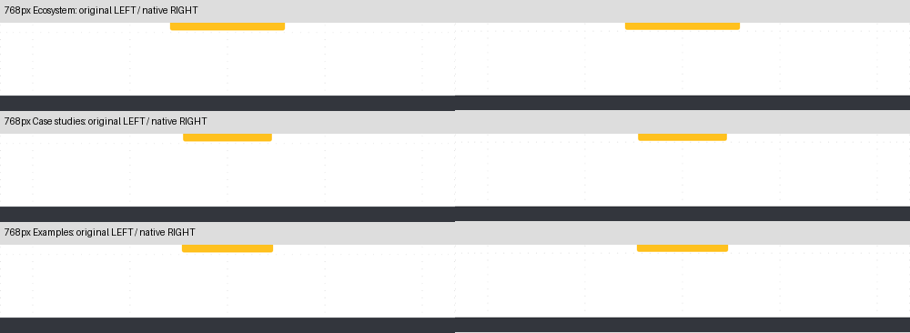
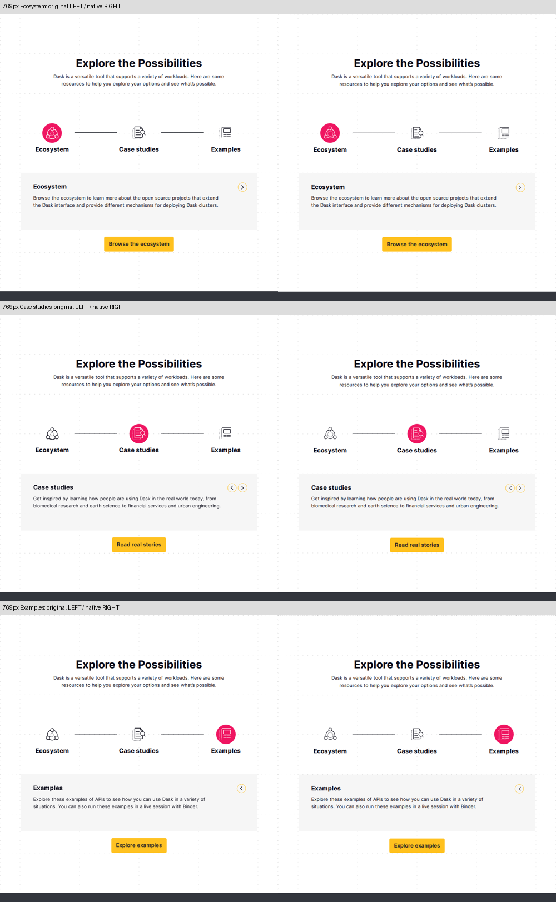
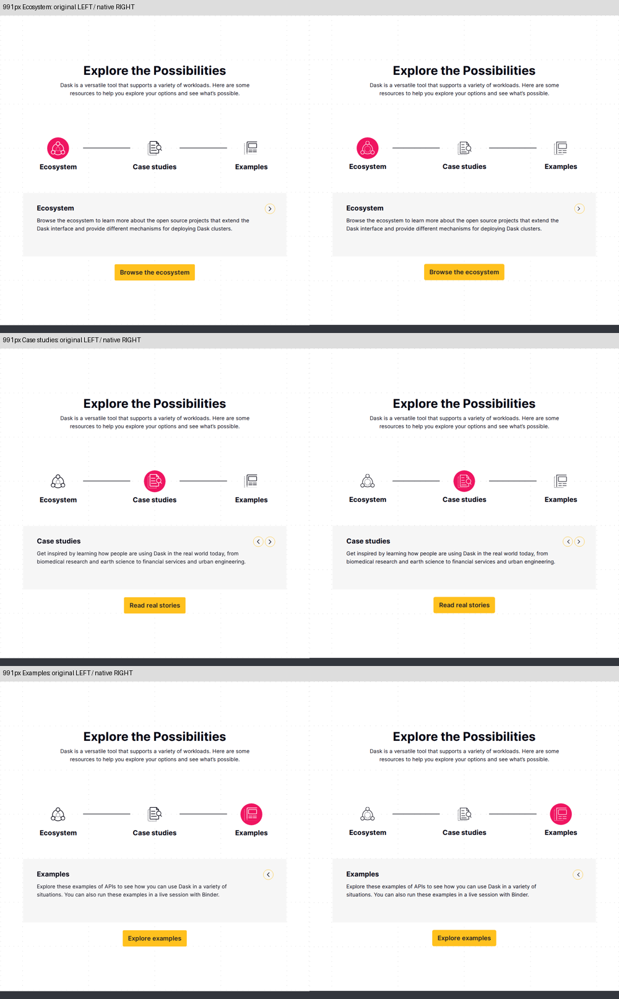
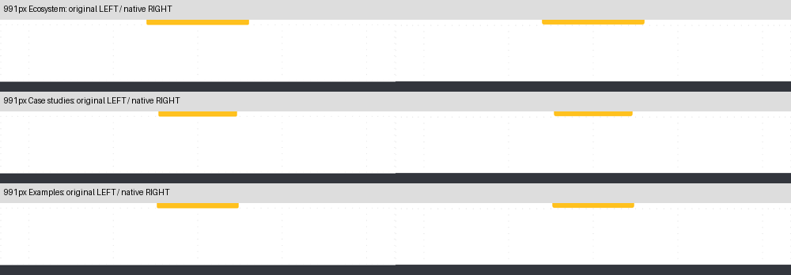
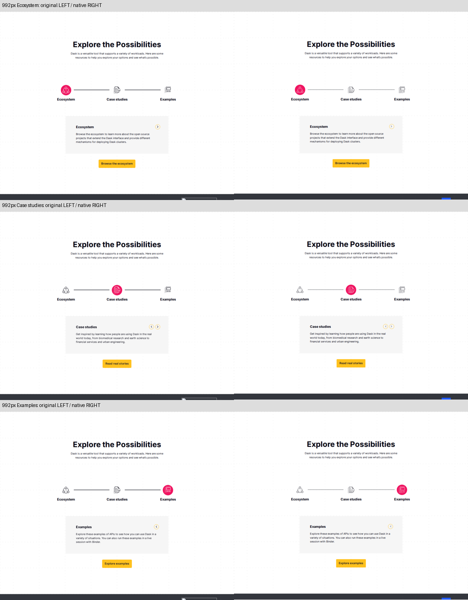
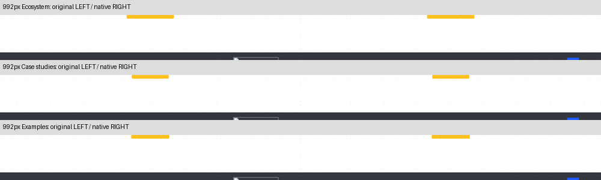
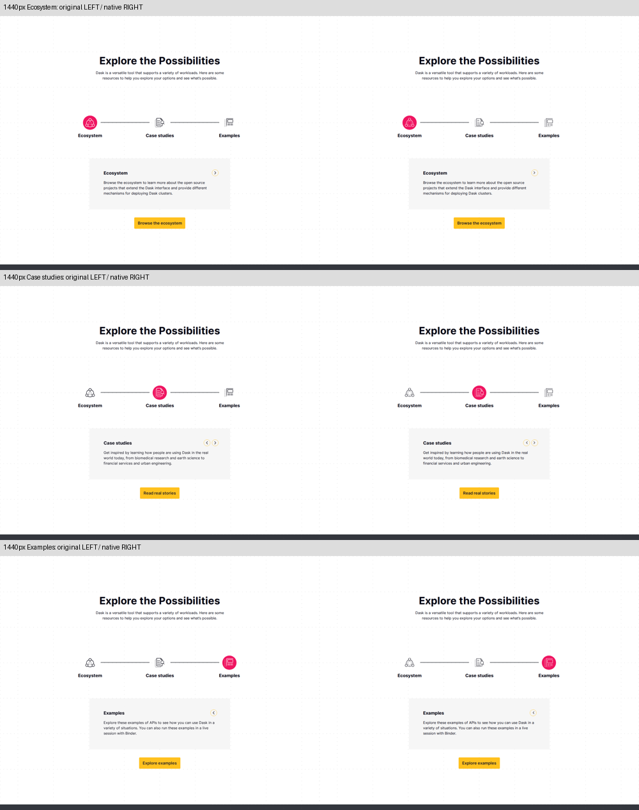
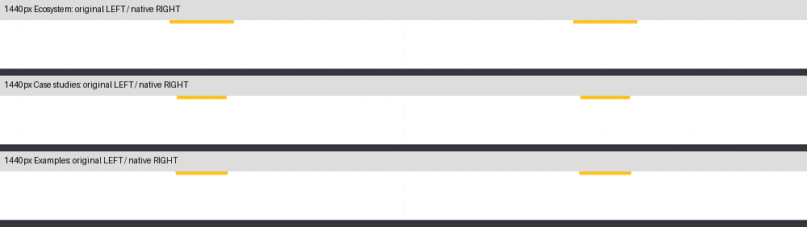